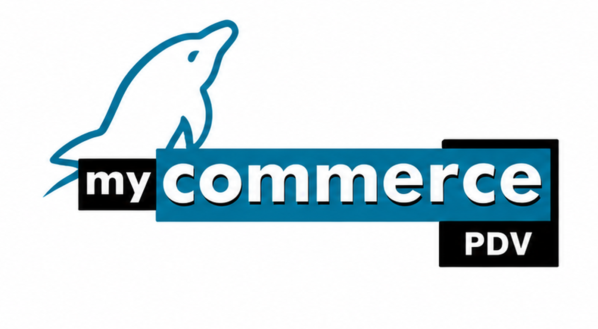

MyCommerce PDV
Automação de pontos de venda para supermercados
MyCommerce PDV
Sabemos a importância de um supermercado ter seus terminais sempre em funcionamento, em virtude do fluxo de clientes apresentado todos os dias. A Visual Software traz, seu pacote específico para o segmento de supermercados. O sistema denominadoMycommerce Pdv.

Praticidade
É o diferencial desse aplicativo, caso sua rede ou servidor do banco de dados apresente problemas durante o expediente, os terminais não param seu funcionamento, esse mecanismo permite a cada terminal possuir um pequeno banco de dados, onde as informações são exportadas de tempos em tempos para o servidor e os terminais não param em nenhum momento. Toda a rotina de venda é muito rápida.
Venda de produtos
Processo de abertura e fechamento de Cupom Fiscal rápido inicie um cupom fiscal bastando apenas passar o código de barras do primeiro item no leitor ou digitando e o software já abre o Cupom Fiscal.
PDV - recuperação de vendas, mesmo com queda de energia
É muito comum para aquelas situações onde o computador desliga sozinho ou mesmo quando acaba a energia no estabelecimento e o cliente já tenha passado uma certa quantidade de produtos no terminal, e quando o computador é novamente ligado, tenha que repassar tudo novamente. No Mycommerce quando acontecer, o PDV volta ao ar exatamente na mesma posição das vendas registradas antes do eventual desligamento.
Cancelamento de item ou do cupom fiscal
Cancele um Item do Cupom Fiscal sem complicações, bastando pressionar a Tecla de Cancelamento de Item e passando o mesmo no Leitor de Código de Barras ou se necessário o cancelamento de um Cupom Fiscal, pressione uma tecla e informe a senha do seu PDV para cancelar o CUPOM FISCAL completo.
Descontos
Quer dar um desconto no ITEM do Cupom Fiscal ou no Total do Cupom Fiscal, tudo isso é possível e com controle de percentuais pela administração do software.
Consulta de preço
Sistema ágil para consulta de preço nos caixas, podendo ser consultado a qualquer momento.
Tabela de produtos
Todo estabelecimento tem diversos produtos sem código de barras ou muito grandes para passar no PDV, com a TABELA DE PRODUTOS este processo fica fácil, pressiona uma tecla o sistema exibe uma listagem dos principais produtos, bastando localizá-lo e digitar seu código da tabela que é um código curto no máximo de 4 dígitos.
Controle de crédito de clientes
Controlam-se, NOS TERMINAIS, clientes que fazem compras no crediário, mas estão em situação irregular com o estabelecimento. É possível configurar para liberar a venda sem solicitar permissão, solicitar permissão de um determinado funcionário (c/ cartão) ou nunca vender em situações de cliente inativo, com limite de crédito ultrapassado, crédito bloqueado, títulos vencidos e outros.
Consulta de crédito
Sistema de consulta de crédito do cliente no PDV, onde o sistema informa o valor de crédito do cliente e seus títulos ativos, se consta títulos atrasados ou limite excedido.
Emissão de duplicata
Acabe com as Notas Promissórias, após uma Venda a Prazo o software gera na própria Impressora Fiscal a Duplicata referente ao CUPOM FISCAL.
Integração com balanças
Trabalhe com balanças diretamente em seu PDV, integração com as principais marcas de balanças do País.
Integração com terminal de consulta de preços
Instale terminais de Consulta de Preço para facilitar a vida de seus clientes, temos integração com as principais marcas de equipamentos.
TEF - transferência eletrônica de fundos
Software Homologado com TEF, elimine as máquinas Pós de TEF e trabalhe com TEF diretamente em seus PDV's agilizando o processo de recebimento e evitando erros.
Múltiplas formas de recebimento
Cadastre rapidamente e administre múltiplas formas de recebimento em seu PDV.
Equipamentos
Comunicação com as principais marcas de impressoras fiscais, leitores, teclados, gavetas, coletores de preço e outros equipamentos do mercado.
Compras
A gestão de compras é o maior fator estratégico nos negócios, focalizando o volume de recursos financeiros. A Função desta atividade é interagir com todas as ferramentas e os departamentos de sua empresa. Para isso o MyCommerce disponbiliza:
- Entrada de Mercadorias
- Cotações com vários fornecedores
- Gerenciamento de Pedidos de compras
- Lista de Faltas
- Relatório de compras com base nas vendas
- Relatório de Produtos sobressalentes no estoque
- Projeção financeira para compras
- Lançamento automático da NF-e de entrada.